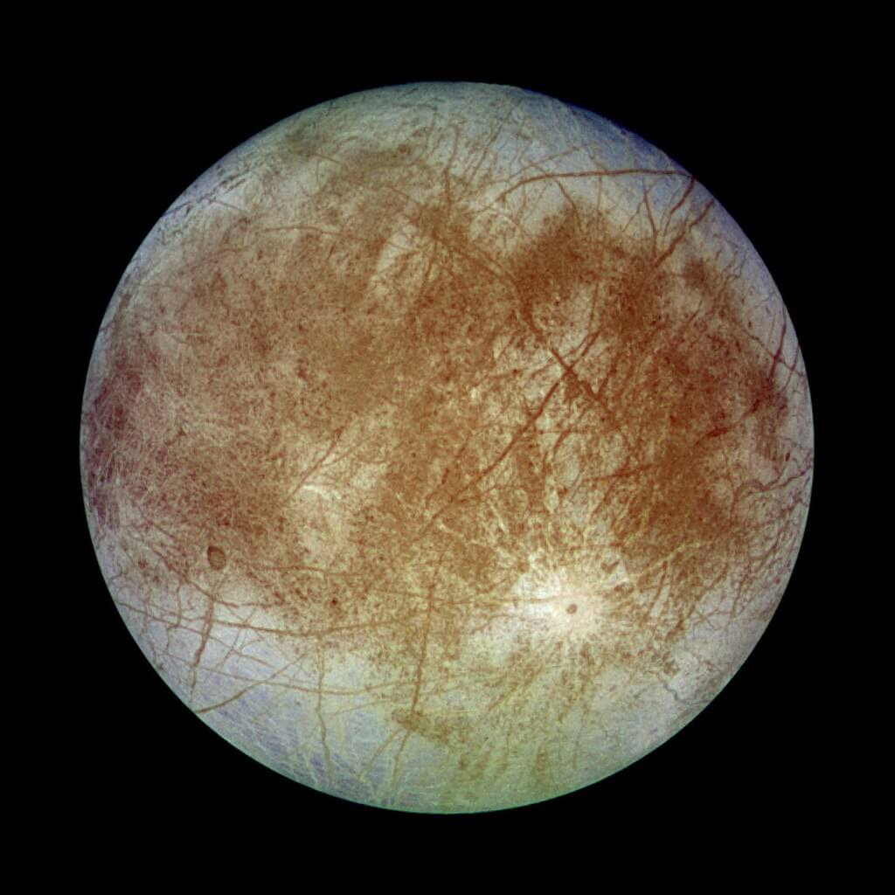

နေကနေ ၅ စင်းမြောက် ဖြစ်တဲ့ ကြာသပတေး ဂြိုဟ်ဟာ နေအဖွဲ့ အစည်းထဲမှာ အကြီးဆုံး ဂြိုဟ် ဖြစ်ရုံတင် မကသေးပါဘူး။ ကြာသပတေး ဂြိုဟ်ဟာ နေအဖွဲ့အစည်း ထဲမှာ အရံလ အများဆုံး ပိုင်ဆိုင်တဲ့ ဂြိုဟ်လဲ ဖြစ်ပါတယ်။
အရင်ကတော့ အရံလ အများဆုံး စံချိန်ကို စေတန် (Saturn) ခေါ် စနေဂြိုဟ်က တင်ထားခဲ့တာ ဖြစ်ပါတယ်။ စနေဂြိုဟ်ဟာ အရံလ ၈၃ လုံးနဲ့ လ အများဆုံး ပိုင်ရှင် အဖြစ် နှစ်ပေါင်းများစွာ စံချိန် တင်ထား ခဲ့ပါတယ်။
ဒါပေမယ့် လွန်ခဲ့တဲ့ နှစ်နှစ်တာ ကာလ အတွင်းမှာ နက္ခတ် ပညာရှင် တွေဟာ ဂျူပီတာ ကို ပတ်နေတဲ့ အရံလ ၁၂ စင်းကို ထပ်မံ ရှာဖွေ တွေ့ရှိ ခဲ့ကြပါတယ်။ ဒါ့ကြောင့် ဂျူပီတာဟာ အရံလ ၉၂ လုံး နဲ့ စေနေဂြိုဟ်ကို နောက်ကောက် အလဲထိုးပြီး အရံလ အများဆုံး ချန်ပီယံ ဆုကို စွတ်ခူးသွားပြီ ဖြစ်ပါတယ်။
ဒီနေရာမှာ အရံလ တွေကို ရေတွက်ရာမှာ စနေ ဂြိုဟ် နဲ့ ကြာသပတေး ဂြိုဟ်တွေကို ပတ်နေတဲ့ မြောက်များလှ စွာသော ကျောက်တုံးတွေ၊ ဥက္ကာတုံး တွေကို ထည့်သွင်း ရေတွက်ထားခြင်း မရှိပါဘူး။ ဒီ ကျောက်တုံးတွေဟာ တချိန်က ဒီ ဂြိုဟ်တွေကို ပတ်နေခဲ့တဲ့ လ တွေ ဖြစ်ကြပြီး အကြောင်းကြောင်းကြောင့် ပျက်စီး ကြွေမွ သွားလို့ ကြွင်းကျန်ရစ် ခဲ့တဲ့ ကျောက်တုံး ကျောက်ခဲ အပိုင်း အစတွေ ဖြစ်မယ်လို့ ပညာရှင် တွေက ယူဆ ကြပါတယ်။
ဒီ ကြာသပတေး ဂြိုဟ်နဲ့ စနေဂြိုဟ် တွေပြီးရင် လ အများအပြား ပိုင်ဆိုင်တဲ့ ဂြိုဟ်တွေကတော့ ယူရေးနပ်စ် (Uranus) ဂြိုဟ်က ၂၇ လုံး၊ နက်ပ်ကျွန်း (Neptune) ဂြိုဟ် က ၁၄ လုံး၊ မားစ် (Mars) ခေါ် အင်္ဂါဂြိုဟ် က ၂ လုံး နဲ့ ကမ္ဘာ (Earth) က တစ်လုံး တို့ အသီးသီး ပိုင်ဆိုင် ထားကြပါတယ်။

အပြည်ပြည် ဆိုင်ရာ နက္ခတ်တာရာ သမဂ္ဂ (International Astronomical Union) ရဲ့ Minor Planet Center (MPC) ဟာ ဒီ အရံလ အသစ် ၁၂ လုံးကို သူတို့ရဲ့ အရံလ မှတ်ပုံတင် စာရင်းမှာ တရားဝင် ထည့်သွင်းလိုက်ပြီ ဖြစ်ပါတယ်။
MPC ရဲ့ သုတေသီ ပညာရှင် တစ်ဦး ဖြစ်သူ Scott Sheppard က သတင်းထောက် တွေကို ပြောကြားရာမှာ “ဒီ အပြင်ပတ်လမ်းက အရံလ တွေကို မကြာမီမှာ အနီးကပ် မြင်တွေ့နိုင်ဖို့ မျှော်လင့် ထားပါတယ်။ ဒီတော့မှ ဒီ လ တွေ ဘယ်က ရောက်လာသလဲ ဆိုတာကို အသေအချာ ဆုံးဖြတ်နိုင်မှာ ဖြစ်ပါတယ်” လို့ ပြောကြားပါတယ်။
ဒီ အရံလ တွေကို တောင်အမေရိကတိုက် ချီလီနိုင်ငံ နဲ့ အမေရိကန် ပြည်ထောင်စု ဟာဝိုင်ရီ ကျွန်း ေပါ်က တယ်လီစကုပ် ကြီးတွေက ရှာဖွေ တွေ့ရှိခဲ့ ကြတာ ဖြစ်ပါတယ်။ ဒီ အရံလ တွေကို ၂၀၂၁ နဲ့ ၂၀၂၂ ခုနှစ်များ အတွင်း တွေ့ရှိခဲ့တာပါ။
အခု အသစ်တွေ့ရှိတဲ့ အရံလ တွေ အားလုံးဟာ ကြာသပတေး ဂြိုဟ်ကို အလွန် ဝေးကွာတဲ့ ပတ်လမ်းကနေ ပတ်နေကြတာ ဖြစ်ပါတယ်။ ဒီ လတွေ ကြာသပတေး ဂြိုဟ်ကို တပတ် ပတ်မိဖို့ ကမ္ဘာရဲ့နေ နဲ့ဆို အနည်းဆုံး အချိန် ရက်ပေါင်း ၃၄၀ လောက် ကြာမြင့်မှာ ဖြစ်ပါတယ်။
ဒီ အသစ်တွေ့ရှိတဲ့ လ ၁၂ လုံး အနက်က ၉ လုံးဟာ ပိုပြီး ဝေးကွာတဲ့ ပတ်လမ်းကနေ ပတ်နေပါတယ်။ ဒီ ဂြိုဟ် ၉ လုံးက ကြာသပေးတဂြိုဟ်ကို တစ်ပတ် ပတ်မိဖို့ ကတော့ ရက်ပေါင်း ၅၅၀ အနည်းဆုံး ကြာမြင့်မယ်လို့ ခန့်မှန်း ကြပါတယ်။
ဒီ လ ၉ လုံးရဲ့ အရွယ်အစား ကလဲ အလွန် သေးငယ်ပါတယ်။ ဒီ လ ၉ စင်း ထဲက ၅ စင်းကပဲ အချင်း ၅ မိုင်ထက် ပိုကြီးပါတယ်။ ကျန်တဲ့ ၄ စင်း ကတော့ အချင်း ၅ မိုင်ထက်တောင် ပိုသေးနေ ပါတယ်။
နောက်ပြီး ဒီ လ ကိုစင်းရဲ့ ထူးခြားချက် ကတော့ သူတို့ရဲ့ လည်တဲ့ဝင်ရိုးရဲ့ ဆန့်ကျင်ဖက် လမ်းကြောင်းအတိုင်း ကြာသပတေး ဂြိုဟ်ကို ပတ်နေတာပဲ ဖြစ်ပါတယ်။ ဒီလို ပြောင်းပြန် ပတ်နေတာကို retrograde orbit လို့ ခေါ်ပါတယ်။ (ဆိုလိုတာက လက လက်ဝဲရစ် လည်ရင် ကြာသပတေး ဂြိုဟ်ကိုကျတော့ လက်ယာရစ် ပြောင်းပြန် ပတ်နေတာကို ပြောတာပါ။)
ကြာသပတေး ဂြိုဟ်ရဲ့ အတွင်း ပတ်လမ်းက လ တွေကတော့ သူတို့ လည်တဲ့ လမ်းကြောင်းအတိုင်းပဲ ကြာသပတေး ဂြိုဟ်ကို ပတ်နေ ကြပါတယ်။ (ဥပမာ လက လက်ဝဲရစ် လည်ရင် မိခင်ဂြိုဟ် ကိုလဲ လက်ဝဲရစ်ပဲ ပတ်ပါမယ်။) ဒါကိုတော့ prograde orbit လို့ ခေါ်ပါတယ်။
ဒီလို ပြောင်းပြန် ပတ်နေတဲ့ အတွက် ဒီ လတွေဟာ အရင်က ကြီးမားတဲ့ လ (သို့) ဂြိုဟ်သိမ်တွေ တိုက်မိရာက ပဲထွက်လာတဲ့ အပိုင်းအစ တွေကို ဂျူပီတာရဲ့ ကြီးမားတဲ့ ဆွဲငင်အားက ဖမ်းဆွဲထားလိုက်ရာက ဖြစ်ပေါ်လာတဲ့ လ တွေဖြစ်မယ်လို့ ပညာရှင် တွေက ယူဆ ကြပါတယ်။
ဂျူပီတာရဲ့ လတွေနဲ့ ပတ်သက်လို့ သိပ်မကြာ မီမှာ ဒီ့ထက်ပိုပြီး ပြည့်ပြည့်စုံစုံ သိလာလိမ့်မယ်လို့ ဆိုပါတယ်။ ဥရောက အာကာသ အေဂျင်စီ (The European Space Agency) ကနေ ဂျူပီတာ ရေခဲလများ စူးစမ်း လေ့လာရေး ယာဉ် (Jupiter Icy Moons Explorer) ကို လာမယ့် ဧပြီလ ထဲမှာ လွှတ်တင်ဖို့ ရာထားပါတယ်။
နာဆာကလဲ Europa Clipper စူးစမ်းလေ့လာရေး ယာဉ်ကို ၂၀၂၄ အောက်တိုဘာမှာ လွှတ်တင်မှာ ဖြစ်ပါတယ်။ ဒီယာဉ်ကတော့ ဂျူပီတာ ရဲ့ ရေခဲလ တစ်ခုဖြစ်တဲ့ ယူရိုပါ (Europa) လကို အသေးစိတ် လေ့လာမှာ ဖြစ်ပါတယ်။
Ref: Astronomers find 12 more moons orbiting Jupiter